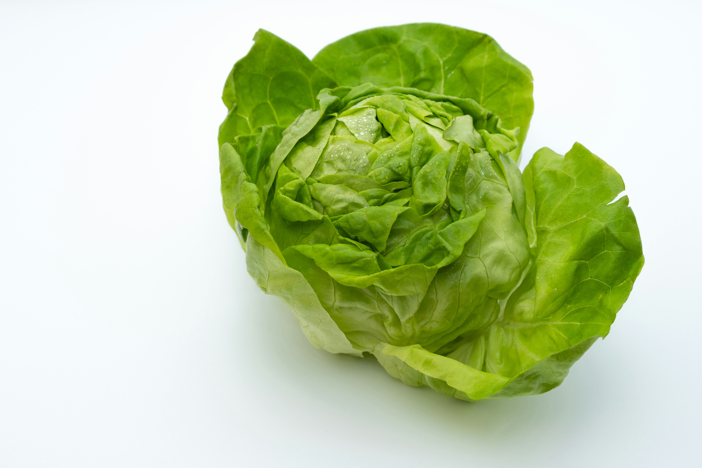

Eco-Friendly Farming
Utilizing organic soil enrichment, natural pest deterrence, and crop rotation to protect ecosystem biodiversity.
Sustainable Agriculture & Agri-Tech Initiative
Bridging eco-friendly farming practices with modern agri-tech solutions to secure community food health and transparent distribution.
Explore Produce CatalogUtilizing organic soil enrichment, natural pest deterrence, and crop rotation to protect ecosystem biodiversity.
Deploying automated drip irrigation monitoring and climate-controlled greenhouses for optimal crop yields.
Connecting fresh harvests straight from our fields to local households, wholesale partners, and dining tables.
Discover what is currently thriving on our farm fields:

Crisp, vibrant, and grown with zero synthetic chemicals.

Nutrient-rich leafy greens harvested daily from our water-saving systems.